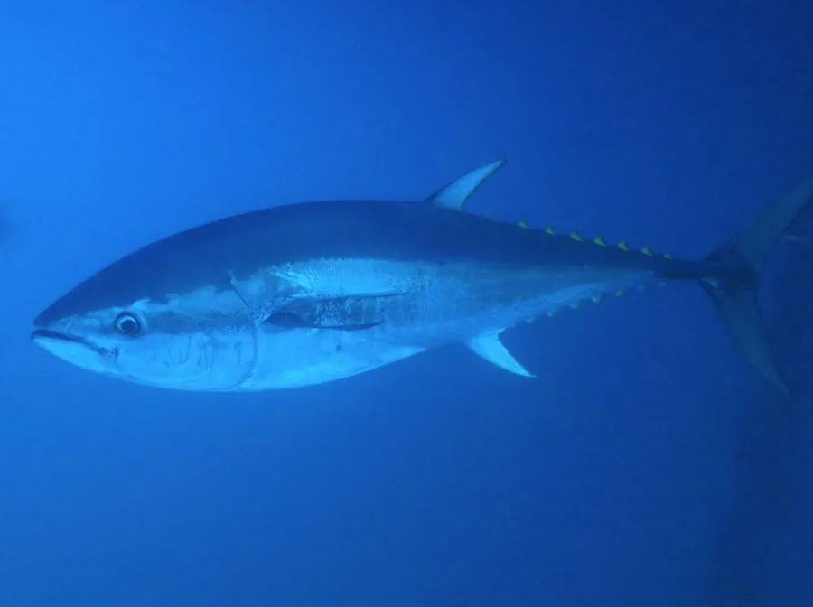

鱼类 · 动物界
蓝鳍金枪鱼 Thunnus thynnus

体型最大的金枪鱼之一，体呈流线型、肌肉发达，能维持高于水温的体温，是寿司市场上的顶级食材。
- 分类
- 门脊索动物门纲硬骨鱼纲目鲈形目科鲭科属金枪鱼属
- 栖息环境
- 大西洋和地中海的远洋水域，常随水温和饵料进行长距离洄游
- 地理分布
- 大西洋两岸及地中海，包括北美东岸、欧洲西岸和北非近海
- 保护级别
- IUCN 无危（LC，2021 年评估）；中国未列入国家重点保护野生动物名录
物种志
蓝鳍金枪鱼体呈粗壮的纺锤形，背鳍两个，第二背鳍和臀鳍后方各有 7–8 个离鳍，尾鳍呈新月形。体背深蓝色，腹部银白色，胸鳍相对较短。成鱼体长一般 2–2.5 m，体重 150–300 kg，最大记录体长超过 3 m、体重超过 600 kg，是体型最大的金枪鱼之一。
蓝鳍金枪鱼是大西洋和地中海的远洋洄游鱼类，肉食性，捕食鲱鱼、鲭鱼、沙丁鱼和乌贼，常成群捕猎。它靠特殊的“奇网”血管结构保温，肌肉温度可比周围海水高 10 ℃ 以上，因而能在冷水中保持强大的肌肉力量。繁殖场主要在地中海和墨西哥湾，雌鱼一次可产数百万粒卵；它生长慢、寿命长，可活 30–40 年。由于长期过度捕捞，其种群曾大幅衰退并被IUCN 评为濒危，经过多年渔业管理后资源有所恢复，2021 年的评估将其调整为无危。目前中国未将其列入国家重点保护野生动物名录。
形态与习性
- 食性捕食鲱鱼、鲭鱼、沙丁鱼和乌贼
- 体长一般 2–2.5 m，最大记录超过 3 m
- 体重常见 150–300 kg，最大记录超过 600 kg
- 寿命约 30–40 年
- 体温肌肉温度可比周围海水高 10 ℃ 以上
- 繁殖在地中海和墨西哥湾产卵，雌鱼一次可产数百万粒卵
趣味知识
- 蓝鳍金枪鱼靠“奇网”血管结构保温，能在冷水中保持发达的肌肉力量。
- 一条大型蓝鳍金枪鱼在东京拍卖市场上曾拍出折合数百万元人民币的高价。
- 它的肉因富含肌红蛋白而呈深红色，脂肪分布是寿司评级的关键。